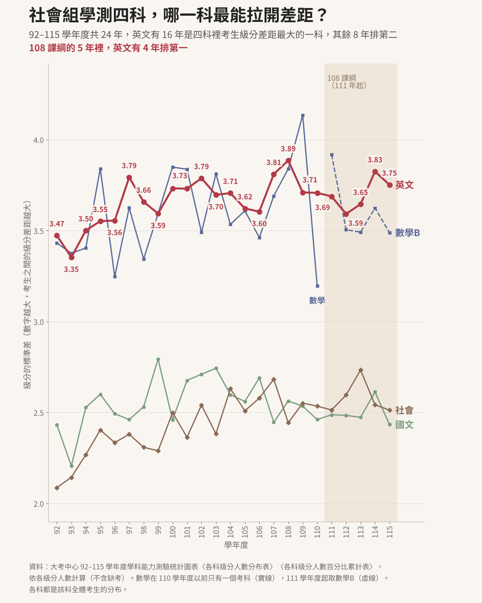
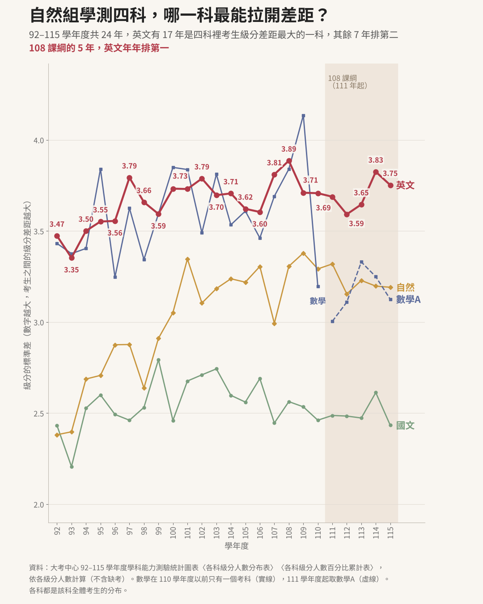
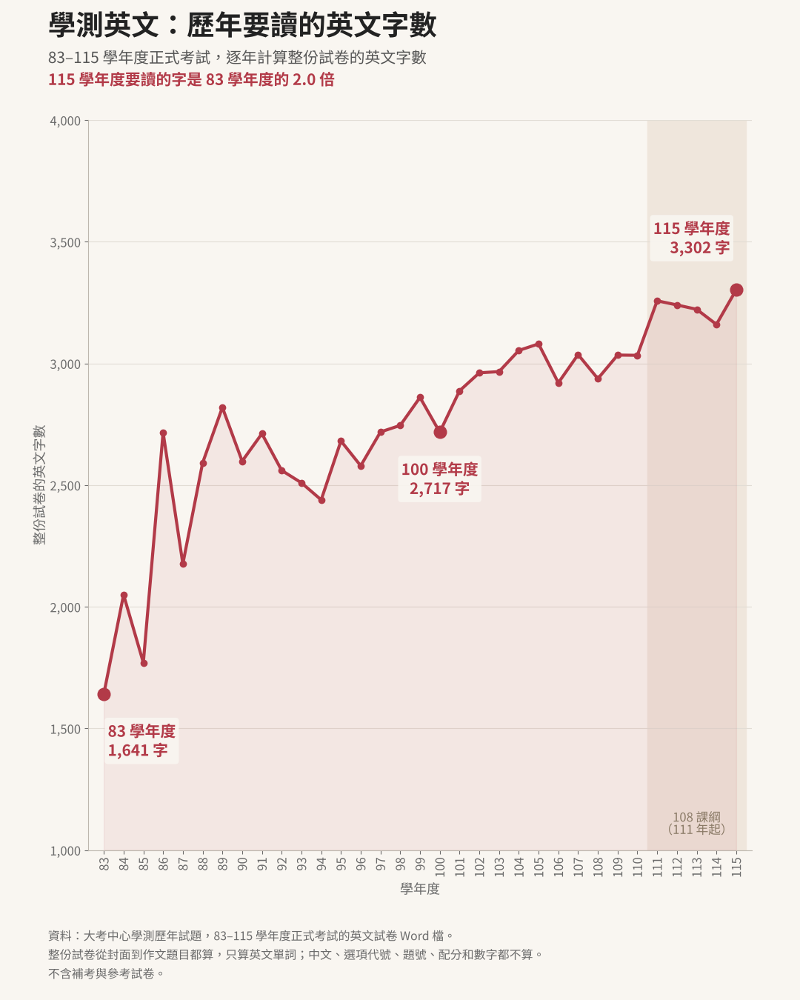

這一頁用大考中心公布的資料整理兩件事情：學測各科考生之間的級分差距有多大，以及歷屆學測英文試卷要讀多少英文字。
下面兩張圖比的是每一科考生之間的級分差距有多大。以 115 學年度為例，國文中間一半的考生擠在 9 到 12 級分，前後只差 4 個級分；英文中間一半的考生從 5 級分排到 11 級分，前後差了 7 個級分。也就是說，國文的考生大多集中在中間，英文的考生則從低分到高分散得很開。
圖上的數字是「標準差」，用大考中心 92 到 115 學年度各科的級分人數算出來。數字越大，表示這一科考生之間的級分差距越大。
大考中心的級分統計是每一科全體考生的分布，沒有依社會組、自然組分開計算。圖上的「社會組」指國文、英文、數學、社會四科的組合，「自然組」指國文、英文、數學、自然四科的組合，不是只算社會組或自然組考生的成績。110 學年度以前數學只有一科，兩張圖用的是同一份數學成績；111 學年度起數學分成 A、B，社會組取數學 B，自然組取數學 A。


級分差距大，不表示英文比較容易拿高級分。以 115 學年度為例，英文 10 級分以上的考生占 39.5%，國文是 65.7%。
每一年、每一科都用 0 到 15 級分各有多少考生，算出這一科級分的標準差；缺考的考生不算。級分人數取自大考中心各年度的學測統計圖表：92 到 96 學年度和 111 到 114 學年度用〈各科級分人數分布表〉，97 到 110 學年度和 115 學年度用〈各科級分人數百分比累計表〉，兩種表都列出每一個級分的人數。
「中間一半的考生」是把考生從低分排到高分，取第 25% 到第 75% 的考生所在的級分，同樣出自 115 學年度的級分人數。
用大考中心公布的 83 到 115 學年度學測英文試卷 Word 檔，逐年計算整份試卷的英文字數：83 學年度 1,641 字，100 學年度 2,717 字，115 學年度 3,302 字，115 學年度是 83 學年度的 2.0 倍。圖表只算英文單詞，不算中文、選項代號、題號、配分和數字。

學測克漏字首頁的〈兩個難度標籤怎麼看〉也算過綜合測驗這一大題：83 到 90 學年度平均每一個空格要讀 18 字，105 到 115 學年度是 37 字，閱讀量同樣翻了一倍。
常聽到「學測英文四千多字」的說法，是用 Word 的「字數統計」數整份試卷得到的。Word 會把每一個中文字算成一個字，所以封面的作答注意事項、各大題的說明、中譯英和作文題目的中文都會算進去，選項代號和題號也算。下表把整份試卷拆成三部分，三欄的合計就接近 Word 數出來的字數。
| 學年度 | 英文單詞圖表畫的是這一欄 | 選項代號、題號等 | 中文字 | 合計 |
|---|---|---|---|---|
| 83 | 1,641 | 292 | 760 | 2,693 |
| 84 | 2,049 | 304 | 677 | 3,030 |
| 85 | 1,770 | 296 | 816 | 2,882 |
| 86 | 2,716 | 296 | 521 | 3,533 |
| 87 | 2,176 | 319 | 543 | 3,038 |
| 88 | 2,591 | 339 | 549 | 3,479 |
| 89 | 2,819 | 312 | 464 | 3,595 |
| 90 | 2,598 | 264 | 639 | 3,501 |
| 91 | 2,711 | 280 | 678 | 3,669 |
| 92 | 2,560 | 292 | 659 | 3,511 |
| 93 | 2,509 | 304 | 549 | 3,362 |
| 94 | 2,439 | 315 | 551 | 3,305 |
| 95 | 2,681 | 286 | 545 | 3,512 |
| 96 | 2,579 | 295 | 590 | 3,464 |
| 97 | 2,718 | 290 | 624 | 3,632 |
| 98 | 2,745 | 296 | 630 | 3,671 |
| 99 | 2,860 | 289 | 598 | 3,747 |
| 100 | 2,717 | 290 | 676 | 3,683 |
| 101 | 2,887 | 297 | 790 | 3,974 |
| 102 | 2,961 | 321 | 753 | 4,035 |
| 103 | 2,966 | 302 | 854 | 4,122 |
| 104 | 3,053 | 314 | 875 | 4,242 |
| 105 | 3,080 | 297 | 892 | 4,269 |
| 106 | 2,920 | 299 | 846 | 4,065 |
| 107 | 3,036 | 310 | 941 | 4,287 |
| 108 | 2,937 | 298 | 961 | 4,196 |
| 109 | 3,034 | 300 | 948 | 4,282 |
| 110 | 3,033 | 330 | 959 | 4,322 |
| 111 | 3,257 | 270 | 850 | 4,377 |
| 112 | 3,240 | 257 | 894 | 4,391 |
| 113 | 3,222 | 274 | 962 | 4,458 |
| 114 | 3,160 | 250 | 891 | 4,301 |
| 115 | 3,302 | 250 | 938 | 4,490 |
Word 和其他文書軟體斷字的方式不完全一樣，用不同軟體數同一份試卷，字數會差一些。
每一年都用大考中心「學測歷年試題」頁公布的英文試卷 Word 檔，早年的 .doc 檔先轉成 .docx 再算。整份試卷從封面算到作文題目，頁首頁尾不算。「英文單詞」只算含英文字母的詞，人名、地名也算；(A)(B)(C)(D) 這類選項代號，以及題號、配分、年份等數字，算在「選項代號、題號等」這一欄。補考、參考試卷和試辦考試都不算。
83 到 92 學年度的試卷還有對話、配合題、短詩閱讀、簡答題等題型，本題庫沒有全部收錄，所以這一頁的字數直接從大考中心的試卷算。學測全卷用字統計只算詞彙、克漏字、文意選填、篇章結構、閱讀測驗、混合題六種題型，另外收了 91、92 年補考，字形一律算回詞彙表的詞條，專有名詞也不算，所以兩頁的總數不一樣。
本頁的標準差與字數由本題庫依大考中心公布的資料自行計算：級分人數取自各年度〈各科級分人數分布表〉〈各科級分人數百分比累計表〉，字數取自大考中心公布的歷屆正式考試試卷 Word 檔。數字如果和大考中心公告的資料有出入，請以大考中心的資料為準。發現錯誤，歡迎透過各題庫內的 Google 表單回報，我會核對更正。